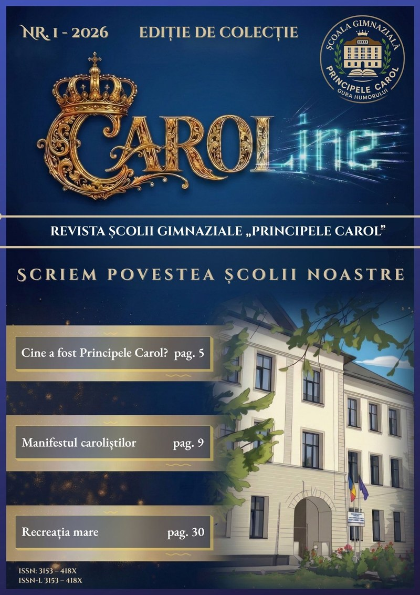

Iunie 2026
Discursurile șefilor de promoție 2025-2026
Patru elevi ai clasei a VIII-a A au încheiat gimnaziul cu media generală 10. Discursurile lor pot fi urmărite pe Carol TV.
Patru elevi ai clasei a VIII-a A au încheiat gimnaziul cu media generală 10. Discursurile lor pot fi urmărite pe Carol TV.

Instituția noastră revine la o denumire încărcată de semnificație: un angajament reînnoit față de excelență, tradiție și valori morale.

Suntem încântați să anunțăm lansarea oficială a hubului media al școlii, „CAROLine": un spațiu de exprimare liberă și creativă dedicat elevilor pasionați de jurnalism, fotografie, vlogging, design grafic și podcasting.
Sub coordonarea profesorilor de limba română și informatică, echipa editorială CAROLine, formată din elevi de gimnaziu, va produce conținut original care reflectă viața școlii prin ochii lor: revista școlii, podcasturi și vlog.
„CAROLine este șansa noastră de a arăta lumii ce putem face. Aici nu luăm note, aici ne descoperim pasiunile", spune un elev din clasa a VII-a, redactor-șef adjunct.